⚙️ Часть I. Подготовка к принятию заявок
Действия, указанные в данной части обязательны к выполнению - это необходимо для корректного принятия заявок. Выполняет их директор школы.
-
Перейдите по ссылке oqu.edu.kz и нажмите на кнопку «Войти».

-
Авторизуйтесь на портале одним из доступных способов: ЭЦП или eGov.
Директор может авторизоваться как через ЭЦП физического лица, так и через ЭЦП юридического лица. При этом учтите, что для подписания заявок обязательно требуется ЭЦП юридического лица.
-
Если вы авторизовываетесь через ЭЦП, то на ваш номер, зарегистрированный в Базе мобильных граждан, поступит SMS с пятизначным кодом. Введите его и нажмите кнопку «Войти в систему». При авторизации с использованием ЭЦП данный код будет направляться при каждом входе в систему.
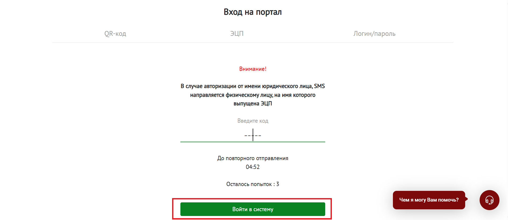
-
Нажмите на кнопку «Разрешить» для сопряжения профилей.
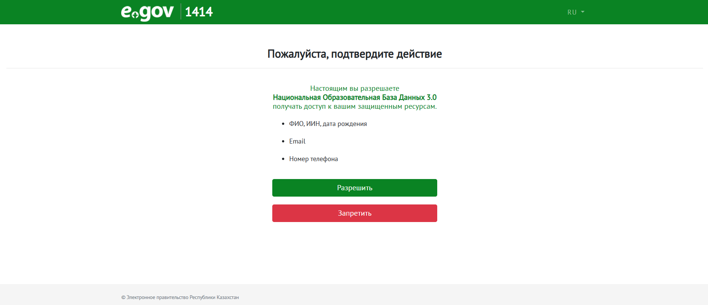
-
Предоставьте согласие на сбор и обработку персональных данных.
На ваш номер, зарегистрированный в Базе мобильных граждан, поступит SMS от номера 1414, на него нужно ответить текстом 511.
Убедитесь, что вы отправляете ответ с той же SIM-карты, на которую поступило SMS.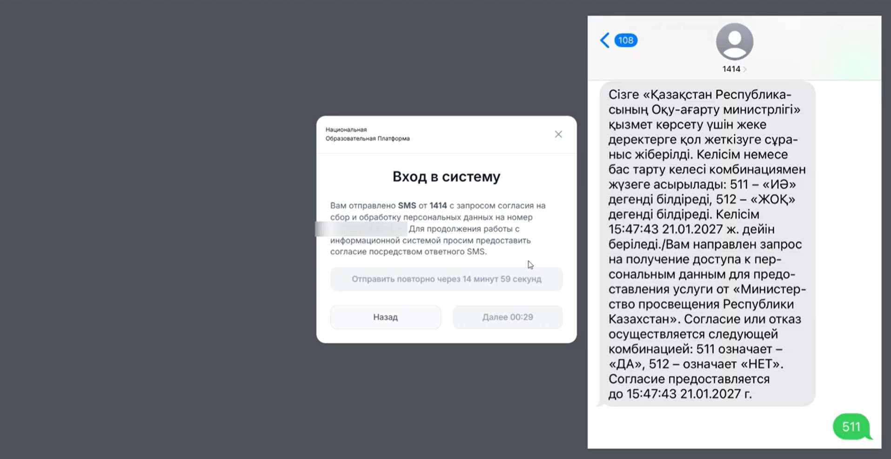
Директор может самостоятельно проверять заявки, не добавляя сотрудников. Однако, в большинстве случаев, этим также занимаются другие сотрудники, поэтому их необходимо добавить заранее.
Заранее определите сотрудников, которые будут заниматься паспортизацией (смотреть микроучасток, лимиты) и принимать решения по заявкам.
-
Перейдите в раздел «Персонал», нажмите «Добавить». Каждого сотрудника нужно добавлять по отдельности.

-
Введите ИИН сотрудника и нажмите «Отправить».
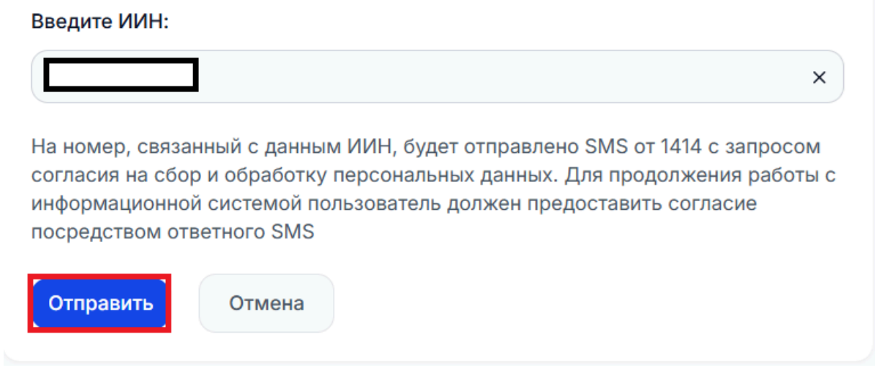
-
На телефон сотрудника поступит SMS от 1414 — попросите его ответить на него согласием. После, нажмите кнопку «Далее».
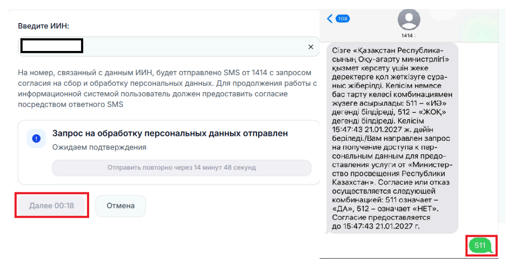
-
Далее выберите должность из справочника и присвойте роль — «Сотрудник ОСО» или «Исполнитель» (можно назначить обе роли одновременно).
«Сотрудник ОСО» отвечает за редактирование лимитов, микроучастков и контингента. «Исполнитель», в свою очередь, обрабатывает поступившие заявки.
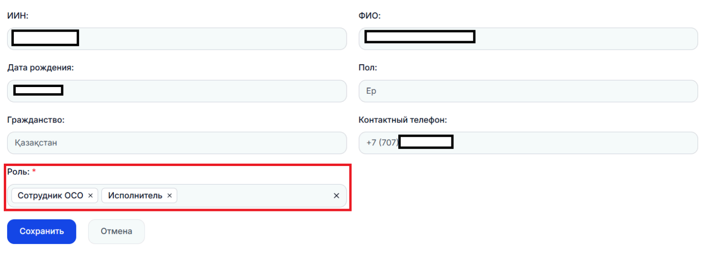
-
Нажмите «Сохранить».

Лимиты классов (количество свободных мест) определяется отдельно для каждой параллели, учитывая класс, язык обучения и текущий учебный год.
Для тех, кто подает вне микроучастка, выделяется ровно четверть (1/4) из общего количества мест.
Все остальные места (3/4) отдаются тем, кто относится к школе по адресу прописки (по микроучастку).
Например, если в 1 классах всего 40 мест, 10 мест выделяется для тех, кто подал заявку вне микроучастка, 30 мест остается для тех, кто прикреплен к школе по микроучастку.
-
Зайдите в личный кабинет и перейдите в раздел «Моя организация» → «Лимиты классов». Раздел находится по ссылке: https://oqu.edu.kz/organization/class-limits
В этом разделе вы можете увидеть общее количество мест и общее количество классов.

-
Выберите необходимый класс и нажмите на иконку «Редактировать» (значок карандаша).

-
Внесите изменения и нажмите «Сохранить». На каждый язык обучения создается своя параллель.
-
При необходимости вы можете добавить новый лимит. Для этого нажмите кнопку «Добавить». Далее выберите язык обучения и укажите количество классов и количество мест в классе.
Примечание: Языки обучения подтягиваются автоматически из НОБД 2.0
-
Заполните все обязательные поля и нажмите кнопку «Сохранить».
В данном разделе отображаются все жилые адреса, закрепленные за территорией обслуживания вашей школы. На основе этих данных система автоматически определяет доступность учебного заведения для заявителей по их прописке.
-
Перейдите в главное меню личного кабинета и откройте подраздел «Моя организация» → «Микроучасток».
На открывшейся странице отобразится текущий перечень улиц и домов вашей организации. Для привязки новой территории нажмите кнопку «Добавить адрес».

-
В появившемся модальном окне введите название улицы в строку поиска и нажмите кнопку «Найти». Выберите необходимый объект из предложенного системного классификатора и нажмите «Привязать». Вы можете выбрать сразу несколько адресов.

-
Если адрес был добавлен ошибочно или передан другому учреждению, нажмите на кнопку «Отвязать» в строке с соответствующим наименованием.
📋 Часть II. Как обрабатывать заявки?
Например, если заявка поступила в 12:30 четверга, она должна быть рассмотрена до 12:30 пятницы. При поступлении заявки после окончания рабочего дня, в выходной или праздничный день, срок отсчитывается с 09:00 следующего рабочего дня. Заявки с истекшим сроком помечаются системой как просроченные.
-
Авторизуйтесь на платформе в роли «Исполнителя».
-
Перейдите в рабочий раздел «Государственные услуги» → «Необработанные заявки».
Прямая ссылка на раздел: https://oqu.edu.kz/organization/gov-services
-
Нажмите на иконку «Глаз» с правой стороны строки, чтобы открыть электронную карточку заявки. Тщательно проверьте данные заявителя, сведения о ребёнке и прикреплённые документы (фото, медицинские справки).
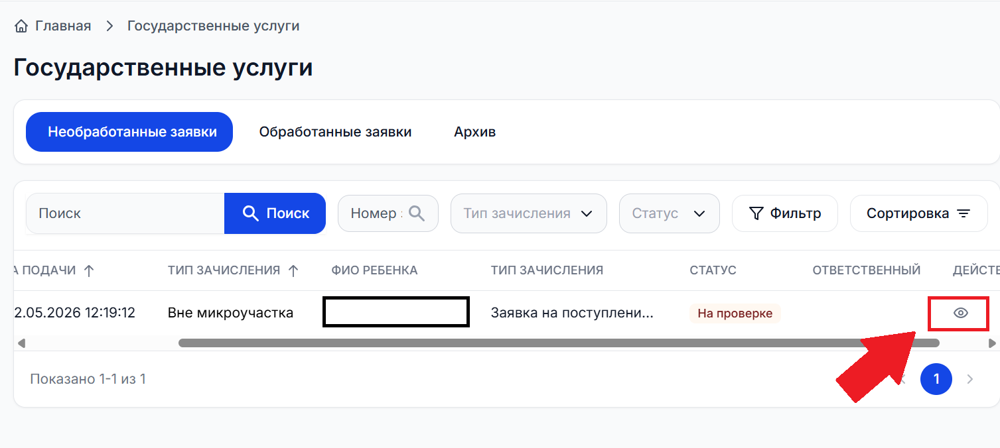
-
На основе проверки примите решение, нажав на соответствующую кнопку внизу экрана:
а) При одобрении: Нажмите кнопку «Принять». Заявка перейдёт в статус «Принято» и будет направлена в личный кабинет директора на финальное подписание.
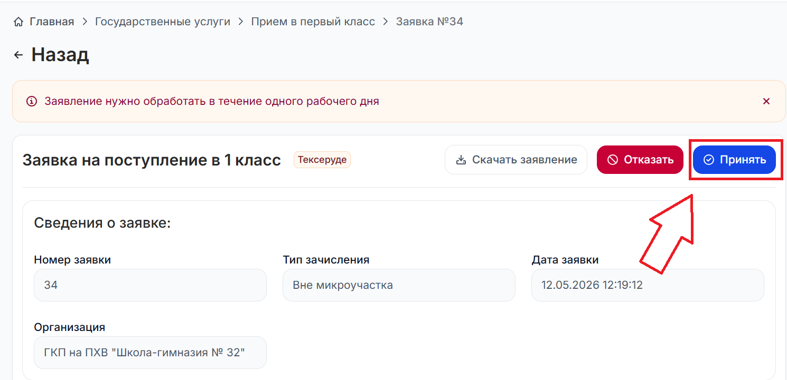
б) При отклонении: Нажмите кнопку «Отказать», выберите официальную мотивированную причину из справочника (или укажите её вручную) и нажмите кнопку «Подтвердить и отправить».
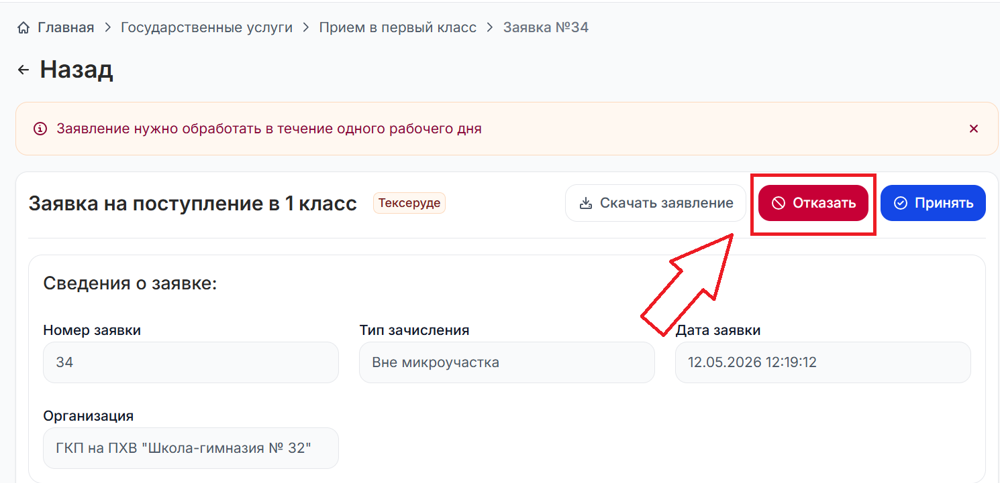
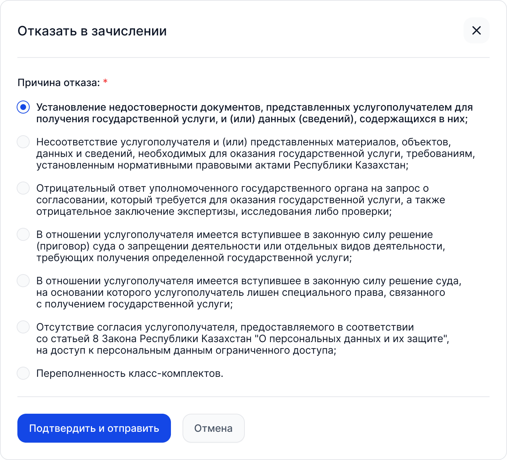
-
Авторизуйтесь на платформе в роли «Директора».
-
Откройте карточку проверенной заявки, находящейся в статусе «На подписании», и выберите необходимое действие:
Вариант А (Если согласны с Исполнителем): Нажмите кнопку «Подписать прием». В открывшемся окне выберите способ подписания (с помощью QR-кода приложения eGov Business или выбрав файл ЭЦП юридического лица) и завершите процедуру.

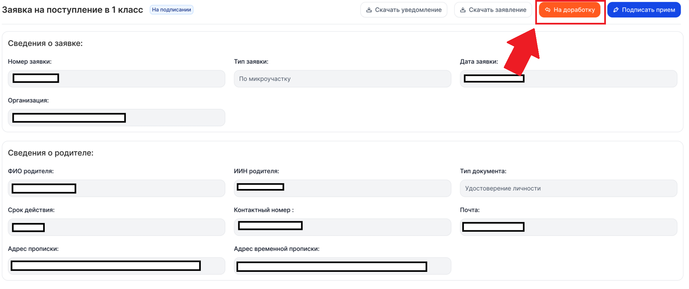
Вариант Б (Если НЕ согласны с Исполнителем): Нажмите кнопку «На доработку», обязательно заполните текстовое поле с указанием внутренней причины возврата. Заявка вернётся Исполнителю в статус «На проверке» для повторного анализа.
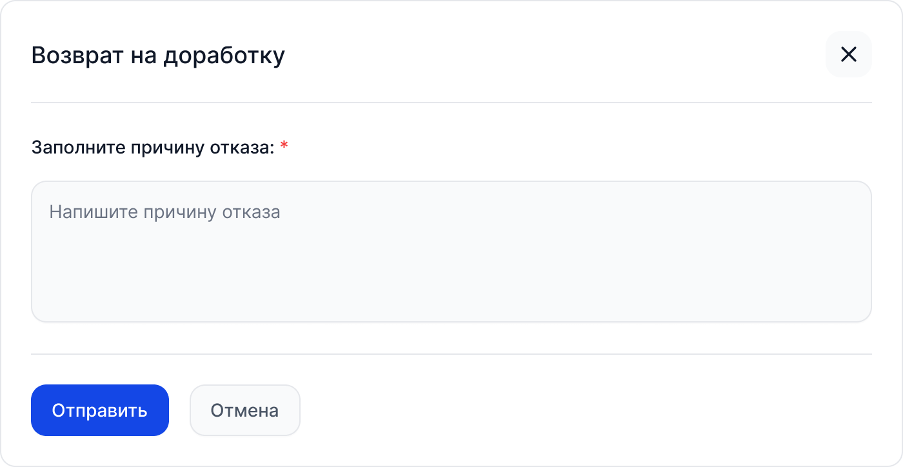
👨👩👦 Часть III. Подача заявки со стороны родителя
В данном разделе описан пошаговый процесс подачи электронного заявления глазами законных представителей (родителей). Это необходимо приёмной комиссии школы для общего понимания логики работы экосистемы и корректного консультирования граждан при личном обращении.
Часть II. Часто задаваемые вопросы
Вход и авторизация
Как войти в личный кабинет школы?
Система перенаправит вас на страницу eGov — пройдите авторизацию через QR-код или ЭЦП.
На ваш номер, зарегистрированный в Базе мобильных граждан, поступит SMS с пятизначным кодом. Введите его и нажмите кнопку «Войти в систему»
Предоставьте разрешение на передачу данных.
При первом входе потребуется подтвердить согласие на сбор и обработку персональных данных — на ваш номер телефона придёт SMS от 1414, ответьте согласием.
После подтверждения система откроет доступный вам личный кабинет школы.
Где взять логин и пароль?
Персонал
Кто может обрабатывать заявки в школе?
Директор — видит все заявки школы, может принять или отклонить любую заявку, вернуть на доработку и ставит финальную подпись. Без подписи директора ни одна заявка не получит финального статуса.
Исполнитель — видит все необработанные заявки, может вынести решение «Принять» или «Отказать», но финальное подписание доступно только директору.
Как добавить сотрудника?
Введите ИИН сотрудника и нажмите «Отправить».
На телефон сотрудника придёт SMS от 1414 для подтверждения согласия на обработку персональных данных — он должен ответить согласием.
Выберите должность из справочника и присвойте роль — «Исполнитель» или «Сотрудник ОСО». Можно назначить обе роли одновременно.
Нажмите «Сохранить» — сотрудник появится в списке персонала и получит соответствующий доступ.
Что такое роль «Сотрудник ОСО»?
Лимиты классов
Где посмотреть лимиты классов?
Что такое правило «3 к 1»?
Как добавить параллель?
Заполните поля: учебный год, номер класса, язык обучения, общее количество мест по параллели.
Нажмите «Сохранить».
Как отредактировать лимиты классов?
Выберите нужную параллель и нажмите «Редактировать».
Внесите изменения и нажмите «Сохранить».
Установить общее количество мест по параллели ниже числа уже принятых заявок нельзя.
Микроучасток
Что такое микроучасток?
Как добавить адрес в микроучасток?
В открывшемся окне введите улицу и нажмите «Найти». Здесь доступны только улицы населённого пункта вашей организации.
Далее выберите нужный адрес и нажмите «Привязать».
Нажмите «Сохранить».
Как удалить адрес из микроучастка?
Нажмите кнопку «Отвязать» в строке выбранного адреса.
Нужной улицы нет в списке при добавлении адреса.
Можно ли принимать заявки вне микроучастка?
Обратите внимание: количество мест вне микроучастка ограничено. Как только общий лимит или лимит вне микроучастка исчерпан, кнопка «Принять» для таких заявок станет недоступна — по ним можно будет только отказать. Приоритет при зачислении имеют дети, подавшие заявку по микроучастку.
Обработка заявок
Как обработать заявку?
Откройте карточку заявки;
Проверьте данные заявителя, ребёнка и прикреплённые документы;
Нажмите «Принять» или «Отказать»;
Заявка перейдёт в статус «На подписании» и перейдет директору на финальную подпись.
Заявки обрабатываются строго по очерёдности — по дате и времени поступления. При попытке обработать заявку вне очереди система выдаст ошибку: «Нарушена очерёдность, есть более ранние заявки в статусе «На проверке».
Количество мест вне микроучастка ограничено. Как только общий лимит или лимит вне микроучастка исчерпан, кнопка «Принять» для таких заявок станет недоступна — по ним можно будет только отказать.
Заявки по микроучастку можно принимать сверх расчётного лимита.
Как директору подписать решение по заявке?
Нажмите «Подписать».
Выберите способ подписания — QR-код eGov Business или ЭЦП юридического лица.
После этого заявка получит финальный статус, а родитель получит уведомление и SMS.
Как вернуть заявку исполнителю на доработку?
Нажмите «На доработку».
Заполните причину, поле обязательно для заполнения.
Нажмите «Отправить» — заявка вернётся в статус «На проверке», исполнитель получит уведомление с вашим комментарием.
В какие сроки должна быть рассмотрена заявка?
Можно ли вынести решение по просроченной заявке?
Как обрабатываются заявки детей с ООП?
Подвоз
Как принять решение по заявке на подвоз?
Можно ли изменить решение по подвозу после подписания?
Документы
Какие документы предоставляет родитель?
Фотография ребёнка формата 3×4;
Карта профилактических прививок (форма 065/у);
Паспорт здоровья ребёнка (форма 052-2/у);
Справка ПМПК — только для детей с особыми образовательными потребностями.